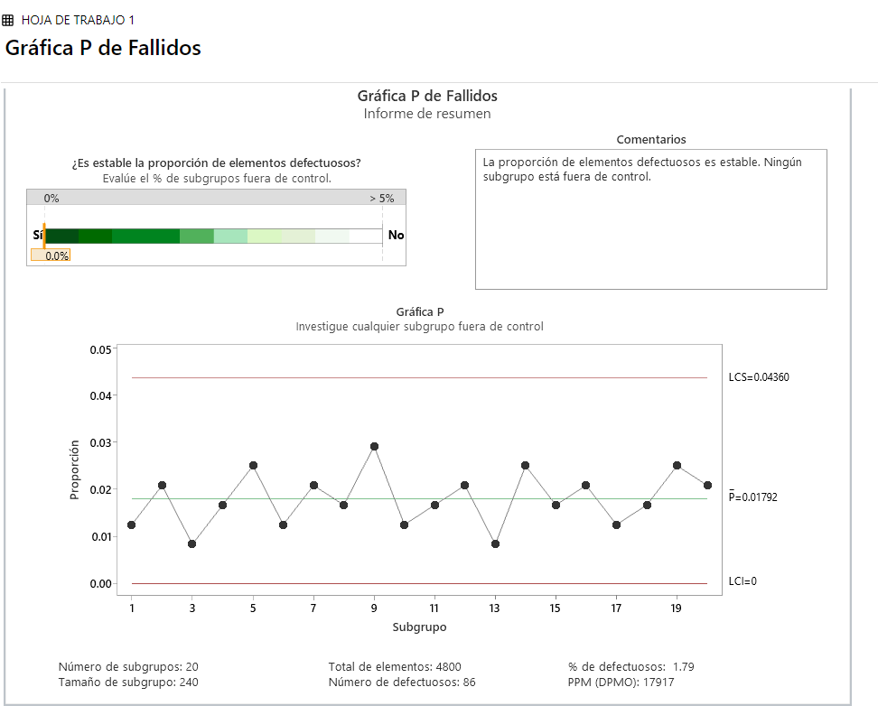
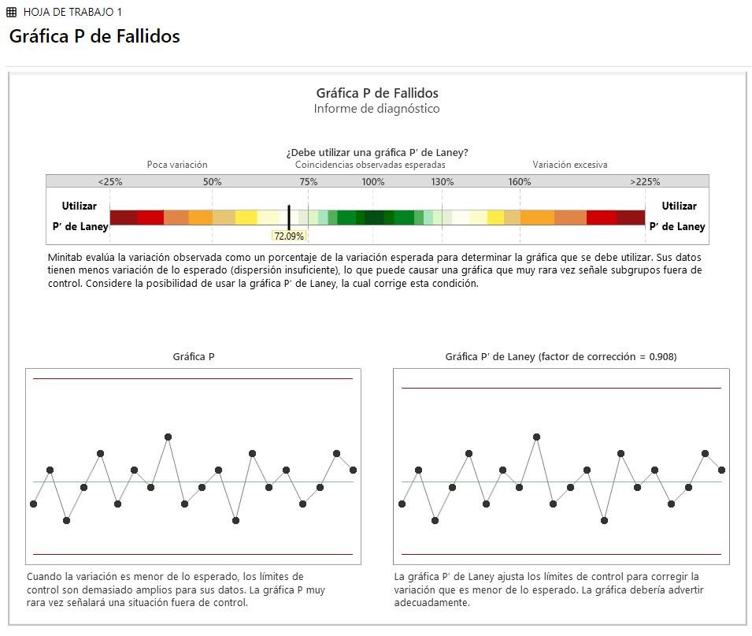

<title>PC4 — Control Estadístico de Procesos · GOOGLE</title>
<link rel="stylesheet" href="css/estilos.css">

<nav class="topbar">
  <div class="wrap">
    <div class="brandmark">PC4 / TE603 · <b>Eduardo Roman</b></div>
    <ul>
      <li><a href="#p1">P1</a></li>
      <li><a href="#p2">P2</a></li>
      <li><a href="#p3">P3</a></li>
      <li><a href="#p4">P4</a></li>
      <li><a href="#conclusiones">Conclusiones</a></li>
    </ul>
  </div>
</nav>

<header class="hero">
  <div class="wrap">
    <div class="tag"><span class="dot"></span> VERSIÓN 6 — CONTEXTO GOOGLE</div>
    <h1>Control Estadístico de Procesos aplicado a <span>infraestructura de centros de datos y servicios en la nube</span></h1>
    <p class="lead">Práctica Calificada N°4 — TE603, FIIS-UNI. Cuatro problemas: carta de atributos (np), capacidad de proceso con índice Taguchi, carta de variables (X̄-R) y análisis crítico conceptual, resueltos con fórmulas de Excel reales y ruta exacta del Asistente de Minitab.</p>
    <div class="meta-row">
      <div class="meta-item"><div class="k">Estudiante</div><div class="v">Eduardo Roman</div></div>
      <div class="meta-item"><div class="k">Curso</div><div class="v">TE603 — Control Estadístico de Procesos</div></div>
      <div class="meta-item"><div class="k">Profesor</div><div class="v">Mg. Marcel Darío Zárate Flores</div></div>
      <div class="meta-item"><div class="k">Duración</div><div class="v">110 min · 20 pts</div></div>
    </div>
  </div>
</header>

<!-- ===================== PROBLEMA 1 ===================== -->
<section id="p1">
  <div class="wrap">
    <div class="sec-head"><span class="sec-num">01</span><h2>Discos duros fallidos por rack de almacenamiento</h2></div>
    <p class="muted">Cada rack de un centro de datos de Google contiene 240 discos. Se inspeccionan 20 racks (n=240 constante) y se cuenta cuántos discos presentan fallas de lectura/escritura.</p>

    <div class="panel" style="margin-top:24px;">
      <h3>1. Identificación de la carta</h3>
      <p>Se trata de un conteo de <b>unidades defectuosas</b> (cada disco pasa o falla la prueba de lectura/escritura), no de "defectos por oportunidad". Como el tamaño de muestra <b>n = 240 es constante</b> en los 20 racks, la carta correcta es <b>np</b>, no <b>p</b> (que se reserva para n variable) ni <b>c</b>/<b>u</b> (que son para conteo de defectos, no de unidades defectuosas). Usar np en vez de p es más directo aquí porque no hace falta normalizar a proporción cuando la base de comparación no cambia entre racks.</p>
    </div>

    <div class="grid2" style="margin-top:20px;">
      <div class="panel">
        <h3>2a. Solución en Excel</h3>
        <ul class="checklist">
          <li>Columna A: Rack (1–20) · Columna B: Discos fallidos</li>
          <li><code>np̄ = PROMEDIO(B4:B23)</code> = 4.30</li>
          <li><code>p̄ = np̄ / 240</code> = 0.01792</li>
          <li><code>UCL = np̄ + 3·RAIZ(np̄·(1-p̄))</code> = 10.46</li>
          <li><code>LCL = MAX(0, np̄ - 3·RAIZ(np̄·(1-p̄)))</code> = 0</li>
          <li><code>CL = np̄</code> = 4.30</li>
        </ul>
      </div>
      <div class="panel">
        <h3>2b. Ruta en Minitab</h3>
        <ol class="steps">
          <li>Ingresar los 20 valores de "Discos fallidos" en una columna (C1)</li>
          <li><code>Asistente &gt; Gráficas de control...</code></li>
          <li>Elegir la familia de <b>atributos</b> → <b>np</b> (defectuosos, tamaño de muestra constante = 240)</li>
          <li>Seleccionar la columna de datos y fijar el tamaño de subgrupo constante en 240</li>
          <li>Minitab genera la carta con UCL/CL/LCL y resalta puntos fuera de control</li>
        </ol>
      </div>
    </div>

    <div class="panel" style="margin-top:20px;">
      <h3>Evidencia real — Minitab (Asistente &gt; Gráficas de control)</h3>
      <div class="grid2">
        <div>
          
          <p class="chart-caption">P̄=0.01792 · LCS=0.04360 · LCI=0 — 0% de subgrupos fuera de control</p>
        </div>
        <div>
          
          <p class="chart-caption">Minitab detecta dispersión insuficiente (72.09% de la variación esperada) — el proceso es más estable de lo típico</p>
        </div>
      </div>
      <div class="callout" style="margin-top:14px;">
        <p>Los valores de Minitab (P̄=0.01792, LCS=0.04360, LCI=0) coinciden exactamente con np̄/n=4.30/240 y UCL/n=10.46/240 calculados en Excel. Minitab además señala <b>dispersión insuficiente</b>: la variación real entre racks es menor a la esperada por un modelo binomial puro, lo que confirma que el proceso de manufactura/instalación de discos es aún más estable de lo que sugiere la carta np estándar — se descartó la Gráfica P' de Laney porque el examen pide la carta np clásica, no un ajuste de dispersión.</p>
      </div>
    </div>

    <div class="panel" style="margin-top:20px;">
      <h3>Carta np — Discos fallidos por rack (versión Excel)</h3>
      <svg viewBox="0 0 760 260" style="width:100%;height:auto;">
        <line x1="40" y1="30.2" x2="740" y2="30.2" stroke="#FF6B4A" stroke-dasharray="4 3" stroke-width="1"/>
        <text x="745" y="34" font-size="11" fill="#FF6B4A" font-family="IBM Plex Mono">UCL 10.46</text>
        <line x1="40" y1="147.9" x2="740" y2="147.9" stroke="#4AE3B5" stroke-dasharray="4 3" stroke-width="1"/>
        <text x="745" y="151" font-size="11" fill="#4AE3B5" font-family="IBM Plex Mono">CL 4.30</text>
        <line x1="40" y1="230" x2="740" y2="230" stroke="#8A9BB5" stroke-dasharray="4 3" stroke-width="1"/>
        <text x="745" y="234" font-size="11" fill="#8A9BB5" font-family="IBM Plex Mono">LCL 0</text>
        <polyline points="40.0,172.7 76.8,134.5 113.7,191.8 150.5,153.6 187.4,115.5 224.2,172.7 261.1,134.5 297.9,153.6 334.7,96.4 371.6,172.7 408.4,153.6 445.3,134.5 482.1,191.8 518.9,115.5 555.8,153.6 592.6,134.5 629.5,172.7 666.3,153.6 703.2,115.5 740.0,134.5" fill="none" stroke="#4AE3B5" stroke-width="1.5"/>
        <circle cx="40.0" cy="172.7" r="3.5" fill="#4AE3B5"/><circle cx="76.8" cy="134.5" r="3.5" fill="#4AE3B5"/><circle cx="113.7" cy="191.8" r="3.5" fill="#4AE3B5"/><circle cx="150.5" cy="153.6" r="3.5" fill="#4AE3B5"/><circle cx="187.4" cy="115.5" r="3.5" fill="#4AE3B5"/><circle cx="224.2" cy="172.7" r="3.5" fill="#4AE3B5"/><circle cx="261.1" cy="134.5" r="3.5" fill="#4AE3B5"/><circle cx="297.9" cy="153.6" r="3.5" fill="#4AE3B5"/><circle cx="334.7" cy="96.4" r="3.5" fill="#4AE3B5"/><circle cx="371.6" cy="172.7" r="3.5" fill="#4AE3B5"/><circle cx="408.4" cy="153.6" r="3.5" fill="#4AE3B5"/><circle cx="445.3" cy="134.5" r="3.5" fill="#4AE3B5"/><circle cx="482.1" cy="191.8" r="3.5" fill="#4AE3B5"/><circle cx="518.9" cy="115.5" r="3.5" fill="#4AE3B5"/><circle cx="555.8" cy="153.6" r="3.5" fill="#4AE3B5"/><circle cx="592.6" cy="134.5" r="3.5" fill="#4AE3B5"/><circle cx="629.5" cy="172.7" r="3.5" fill="#4AE3B5"/><circle cx="666.3" cy="153.6" r="3.5" fill="#4AE3B5"/><circle cx="703.2" cy="115.5" r="3.5" fill="#4AE3B5"/><circle cx="740.0" cy="134.5" r="3.5" fill="#4AE3B5"/>
      </svg>
      <p class="chart-caption">Discos fallidos por rack (1–20) · np̄=4.30 · UCL=10.46 · LCL=0</p>
    </div>

    <div class="panel" style="margin-top:20px;">
      <h3>3. Interpretación de negocio</h3>
      <span class="badge badge-ok">En control estadístico</span>
      <p style="margin-top:10px;">Los 20 racks (rango 2–7 discos fallidos) se mantienen dentro de UCL=10.46 y LCL=0, sin rachas ni tendencias visibles: el proceso de manufactura/instalación de discos es estable. Si un rack apareciera fuera de UCL, indicaría una causa especial (lote defectuoso de proveedor, falla ambiental en ese rack específico) que reduce el margen de redundancia RAID en ese punto — con más discos fallando simultáneamente en la misma unidad de paridad, aumenta el riesgo de pérdida de datos antes de que el sistema pueda reconstruir la redundancia.</p>
    </div>
  </div>
</section>

<!-- ===================== PROBLEMA 2 ===================== -->
<section id="p2">
  <div class="wrap">
    <div class="sec-head"><span class="sec-num">02</span><h2>Tiempo de respuesta de servidor — Capacidad con índice Taguchi</h2></div>
    <p class="muted">SLA interno de Google Search: T = 100 ms, LSL = 50 ms, USL = 150 ms. Resumen de n = 180 consultas: X̄ = 105 ms, s = 18 ms.</p>

    <div class="panel" style="margin-top:24px;">
      <h3>1–2. Cálculo manual en Excel</h3>
      <table>
        <tr><th>Índice</th><th>Fórmula</th><th>Resultado</th></tr>
        <tr><td>Cp</td><td>(USL−LSL)/(6·s) = (150−50)/(6·18)</td><td>0.926</td></tr>
        <tr><td>Cpl (Cpi)</td><td>(X̄−LSL)/(3·s) = (105−50)/(3·18)</td><td>1.019</td></tr>
        <tr><td>Cpu (Cps)</td><td>(USL−X̄)/(3·s) = (150−105)/(3·18)</td><td>0.833</td></tr>
        <tr><td>Cpk</td><td>MIN(Cpu, Cpl)</td><td>0.833</td></tr>
        <tr><td>Cpm (Taguchi)</td><td>(USL−LSL)/(6·√(s²+(X̄−T)²))</td><td>0.892</td></tr>
      </table>
    </div>

    <div class="grid2" style="margin-top:20px;">
      <div class="panel">
        <h3>Gráfica de capacidad (barras)</h3>
        <svg viewBox="0 0 400 220" style="width:100%;height:auto;">
          <line x1="40" y1="180" x2="380" y2="180" stroke="#223652"/>
          <rect x="55"  y="87.4" width="50" height="92.6" fill="#345277"/>
          <rect x="130" y="78.1" width="50" height="101.9" fill="#345277"/>
          <rect x="205" y="96.7" width="50" height="83.3" fill="#F2A93B"/>
          <rect x="280" y="90.8" width="50" height="89.2" fill="#4AE3B5"/>
          <line x1="40" y1="47" x2="380" y2="47" stroke="#4AE3B5" stroke-dasharray="3 3"/>
          <text x="382" y="51" font-size="9" fill="#4AE3B5" font-family="IBM Plex Mono">1.33</text>
          <line x1="40" y1="80" x2="380" y2="80" stroke="#FF6B4A" stroke-dasharray="3 3"/>
          <text x="382" y="84" font-size="9" fill="#FF6B4A" font-family="IBM Plex Mono">1.00</text>
          <text x="65" y="198" font-size="11" fill="#8A9BB5" font-family="IBM Plex Mono">Cp</text>
          <text x="138" y="198" font-size="11" fill="#8A9BB5" font-family="IBM Plex Mono">Cpl</text>
          <text x="215" y="198" font-size="11" fill="#8A9BB5" font-family="IBM Plex Mono">Cpk</text>
          <text x="288" y="198" font-size="11" fill="#8A9BB5" font-family="IBM Plex Mono">Cpm</text>
        </svg>
        <p class="chart-caption">Cp=0.93 · Cpl=1.02 · Cpk=0.83 · Cpm=0.89 — Cpk por debajo de 1.0</p>
      </div>
      <div class="panel">
        <h3>3. Minitab — configurar Target para Cpm</h3>
        <ol class="steps">
          <li><code>Asistente &gt; Análisis de capacidad...</code></li>
          <li>Elegir datos de resumen (media, desv. estándar, n) o la columna de 180 mediciones</li>
          <li>En el cuadro de diálogo, llenar el campo <b>Target = 100</b> además de LSL=50 y USL=150</li>
          <li>Al fijar el Target, el reporte incluye automáticamente <b>Cpm</b> junto a Cp/Cpk</li>
        </ol>
        <div class="callout" style="margin-top:14px;">
          <p><b>Interpretación:</b> Cpk=0.833 &lt; 1.0 → el proceso <b>no es capaz</b>: aunque Cpl=1.02 sugiere margen hacia el LSL, el Cpu=0.833 muestra que el proceso está desplazado hacia el USL, comiéndose el margen contra el límite superior. Cpm=0.892 confirma que, además de no ser capaz, el proceso está descentrado respecto al target de 100 ms — "cumple" el SLA solo por poco y con riesgo real de exceder 150 ms bajo variabilidad normal. A la escala de Google (miles de millones de consultas diarias), un Cpk de 0.83 no es un margen cosmético: incluso una fracción pequeña de solicitudes fuera de spec se traduce en un volumen absoluto enorme de consultas lentas, algo que una empresa de bajo volumen con el mismo Cpk no sentiría de forma perceptible.</p>
        </div>
      </div>
    </div>
  </div>
</section>

<!-- ===================== PROBLEMA 3 ===================== -->
<section id="p3">
  <div class="wrap">
    <div class="sec-head"><span class="sec-num">03</span><h2>Temperatura del pasillo frío — Carta X̄-R</h2></div>
    <p class="muted">Objetivo de climatización: 22 °C. Subgrupos de n=4 mediciones cada 2 horas, 15 subgrupos, sensores distribuidos en distintos racks.</p>

    <div class="panel" style="margin-top:24px;">
      <h3>1. Identificación de la carta</h3>
      <p>La temperatura es una <b>variable continua</b> y cada subgrupo trae <b>n=4</b> mediciones (n ≤ 10) → corresponde <b>X̄-R</b>, no X̄-S (reservada para n&gt;10) ni I-MR (que es para mediciones individuales genuinas, no subgrupos).</p>
    </div>

    <div class="grid2" style="margin-top:20px;">
      <div class="panel">
        <h3>2a. Solución en Excel</h3>
        <ul class="checklist">
          <li><code>X̄ᵢ = PROMEDIO(subgrupo i)</code>, <code>Rᵢ = MAX-MIN(subgrupo i)</code></li>
          <li><code>X̿ = PROMEDIO(X̄1:X̄15)</code> = 22.457 °C</li>
          <li><code>R̄ = PROMEDIO(R1:R15)</code> = 0.307 °C</li>
          <li>Constantes n=4: A2=0.729, D3=0, D4=2.282</li>
          <li><code>UCL_X̄ = X̿+A2·R̄</code> = 22.680 · <code>LCL_X̄ = X̿-A2·R̄</code> = 22.233</li>
          <li><code>UCL_R = D4·R̄</code> = 0.700 · <code>LCL_R = 0</code></li>
        </ul>
      </div>
      <div class="panel">
        <h3>2b. Ruta en Minitab</h3>
        <ol class="steps">
          <li>Ingresar X1..X4 en 4 columnas, un subgrupo por fila</li>
          <li><code>Asistente &gt; Gráficas de control...</code></li>
          <li>Elegir familia de <b>variables</b> → <b>X̄-R</b> (subgrupos de tamaño ≤10)</li>
          <li>Indicar las 4 columnas de mediciones; Minitab dibuja la carta R primero y luego la X̄</li>
        </ol>
      </div>
    </div>

    <div class="panel" style="margin-top:20px;">
      <h3>Carta X̄ — Temperatura pasillo frío</h3>
      <svg viewBox="0 0 760 260" style="width:100%;height:auto;">
        <line x1="40" y1="108.9" x2="740" y2="108.9" stroke="#FF6B4A" stroke-dasharray="4 3" stroke-width="1"/>
        <text x="745" y="112" font-size="11" fill="#FF6B4A" font-family="IBM Plex Mono">UCL 22.68</text>
        <line x1="40" y1="136.5" x2="740" y2="136.5" stroke="#4AE3B5" stroke-dasharray="4 3" stroke-width="1"/>
        <text x="745" y="140" font-size="11" fill="#4AE3B5" font-family="IBM Plex Mono">CL 22.46</text>
        <line x1="40" y1="164.1" x2="740" y2="164.1" stroke="#FF6B4A" stroke-dasharray="4 3" stroke-width="1"/>
        <text x="745" y="168" font-size="11" fill="#FF6B4A" font-family="IBM Plex Mono">LCL 22.23</text>
        <polyline points="40.0,199.1 90.0,192.9 140.0,196.0 190.0,186.8 240.0,183.7 290.0,162.1 340.0,162.1 390.0,125.0 440.0,137.4 490.0,100.3 540.0,125.0 590.0,87.9 640.0,75.6 690.0,63.2 740.0,50.9" fill="none" stroke="#8A9BB5" stroke-width="1.5"/>
        <circle cx="40.0" cy="199.1" r="3.5" fill="#FF6B4A"/><circle cx="90.0" cy="192.9" r="3.5" fill="#FF6B4A"/><circle cx="140.0" cy="196.0" r="3.5" fill="#FF6B4A"/><circle cx="190.0" cy="186.8" r="3.5" fill="#FF6B4A"/><circle cx="240.0" cy="183.7" r="3.5" fill="#FF6B4A"/><circle cx="290.0" cy="162.1" r="3.5" fill="#4AE3B5"/><circle cx="340.0" cy="162.1" r="3.5" fill="#4AE3B5"/><circle cx="390.0" cy="125.0" r="3.5" fill="#4AE3B5"/><circle cx="440.0" cy="137.4" r="3.5" fill="#4AE3B5"/><circle cx="490.0" cy="100.3" r="3.5" fill="#FF6B4A"/><circle cx="540.0" cy="125.0" r="3.5" fill="#4AE3B5"/><circle cx="590.0" cy="87.9" r="3.5" fill="#FF6B4A"/><circle cx="640.0" cy="75.6" r="3.5" fill="#FF6B4A"/><circle cx="690.0" cy="63.2" r="3.5" fill="#FF6B4A"/><circle cx="740.0" cy="50.9" r="3.5" fill="#FF6B4A"/>
      </svg>
      <p class="chart-caption">Subgrupos 1–15 · puntos rojos = fuera de los límites de control (por encima de UCL o por debajo de LCL)</p>
    </div>

    <div class="panel" style="margin-top:20px;">
      <h3>3. Interpretación de negocio</h3>
      <span class="badge badge-alert">Fuera de control — tendencia sostenida</span>
      <p style="margin-top:10px;">La carta muestra una <b>tendencia monotónica de 15 subgrupos consecutivos al alza</b> (de 21.95 °C a 23.15 °C), con varios puntos fuera de UCL/LCL en ambos extremos respecto a la media global — un patrón clásico de deriva, no de ruido aleatorio. En el contexto de un data center, esto es consistente con <b>degradación progresiva del sistema de enfriamiento</b> (filtros obstruidos, pérdida de eficiencia del compresor) o con un <b>aumento de carga computacional</b> que el sistema de climatización ya no compensa. El riesgo operativo de no corregir esto es que el pasillo frío rebase umbrales térmicos de los racks, acelerando fallas de hardware (lo cual conecta directamente con el Problema 1) y arriesgando SLAs de disponibilidad.</p>
    </div>
  </div>
</section>

<!-- ===================== PROBLEMA 4 ===================== -->
<section id="p4">
  <div class="wrap">
    <div class="sec-head"><span class="sec-num">04</span><h2>Análisis conceptual y detección de errores metodológicos</h2></div>

    <div class="finding">
      <div class="fnum">01</div>
      <div>
        <h4>¿Cpk alto pero fuera de control estadístico?</h4>
        <p>Sí. Cpk compara la variación <i>within-subgroup</i> contra los límites de especificación, pero no verifica la estabilidad temporal del proceso. Ejemplo en Google Cloud: un servidor puede tener toda su variación de latencia dentro de LSL/USL (Cpk alto) y aun así mostrar una tendencia sostenida, un punto fuera de los límites de control, o rachas de 7+ puntos — causas especiales activas que Cpk simplemente no detecta porque solo mide dispersión vs. especificación, no estabilidad en el tiempo.</p>
      </div>
    </div>
    <div class="finding">
      <div class="fnum">02</div>
      <div>
        <h4>Capacidad de corto plazo (Cp/Cpk) vs. largo plazo (Pp/Ppk)</h4>
        <p>Cp/Cpk usan la variación <i>within-subgroup</i>, asumiendo el proceso en control estadístico al momento del estudio (capacidad potencial de corto plazo). Pp/Ppk usan la desviación estándar <i>overall</i> de todos los datos, capturando también la variación entre subgrupos (deriva, cambios de turno). Para reportar un SLA de uptime a clientes empresariales conviene usar Pp/Ppk porque el cliente experimenta la variación real acumulada durante meses de operación, no la variación idealizada de un subgrupo aislado.</p>
      </div>
    </div>
    <div class="finding">
      <div class="fnum">03</div>
      <div>
        <h4>Incidentes de seguridad por trimestre: ¿carta c o I-MR?</h4>
        <p>Datos: 2, 1, 3, 0, 2, 4, 1, 3 (8 trimestres). Es un <b>conteo de eventos raros (defectos)</b> sin un denominador fijo de "éxito/fracaso" — no hay una base de "n incidentes posibles" contra la cual normalizar, a diferencia de una proporción de unidades defectuosas. Tratarlo como I-MR asumiría que es una medición continua individual, ignorando que es una variable discreta tipo Poisson. La carta correcta es <b>c</b>: <code>c̄ = Σ(incidentes)/k = 16/8 = 2.0</code>, <code>UCL = c̄+3·√c̄ = 6.24</code>, <code>LCL = MAX(0, c̄-3·√c̄) = 0</code>.</p>
      </div>
    </div>
  </div>
</section>

<!-- ===================== CONCLUSIONES ===================== -->
<section id="conclusiones">
  <div class="wrap">
    <div class="sec-head"><span class="sec-num">—</span><h2>Conclusiones generales</h2></div>
    <div class="panel">
      <p>Los cuatro problemas ilustran el mismo principio aplicado a distintas capas de la infraestructura de Google: identificar primero si el dato es <b>variable continua</b> o <b>atributo</b>, y dentro de atributos, si el denominador de comparación (n) es <b>fijo o variable</b> y si se cuenta <b>unidades defectuosas</b> o <b>defectos</b>. El hardware (P1, discos por rack) está en control con margen amplio; el software de servicio (P2, latencia de búsqueda) cumple el SLA pero con un Cpk por debajo de 1.0 que a escala masiva representa un volumen absoluto de fallas nada despreciable; la infraestructura física (P3, climatización) muestra una tendencia de deriva que exige intervención antes de declarar el sistema fuera de control formalmente; y el ejercicio conceptual (P4) refuerza que la elección de carta/índice no es un detalle técnico sino una decisión que cambia la conclusión de negocio.</p>
    </div>
  </div>
</section>

<footer>
  <div class="wrap">
    <p><b>Bibliografía:</b> Montgomery, D. C. — Introduction to Statistical Quality Control. Documentación oficial de Minitab (Assistant menu). Apuntes del curso TE603, FIIS-UNI.</p>
    <p style="margin-top:6px;"><b>Uso de IA:</b> Ver <a href="prompts/prompts.md">prompts/prompts.md</a> y <a href="declaracionIA.md">declaracionIA.md</a> para el detalle de apoyo de IA utilizado en esta entrega.</p>
    <p style="margin-top:6px;">EL PROFESOR — UNI 2026-1 · Entrega: Eduardo Roman (EDUARDOROMAN566)</p>
  </div>
</footer>
